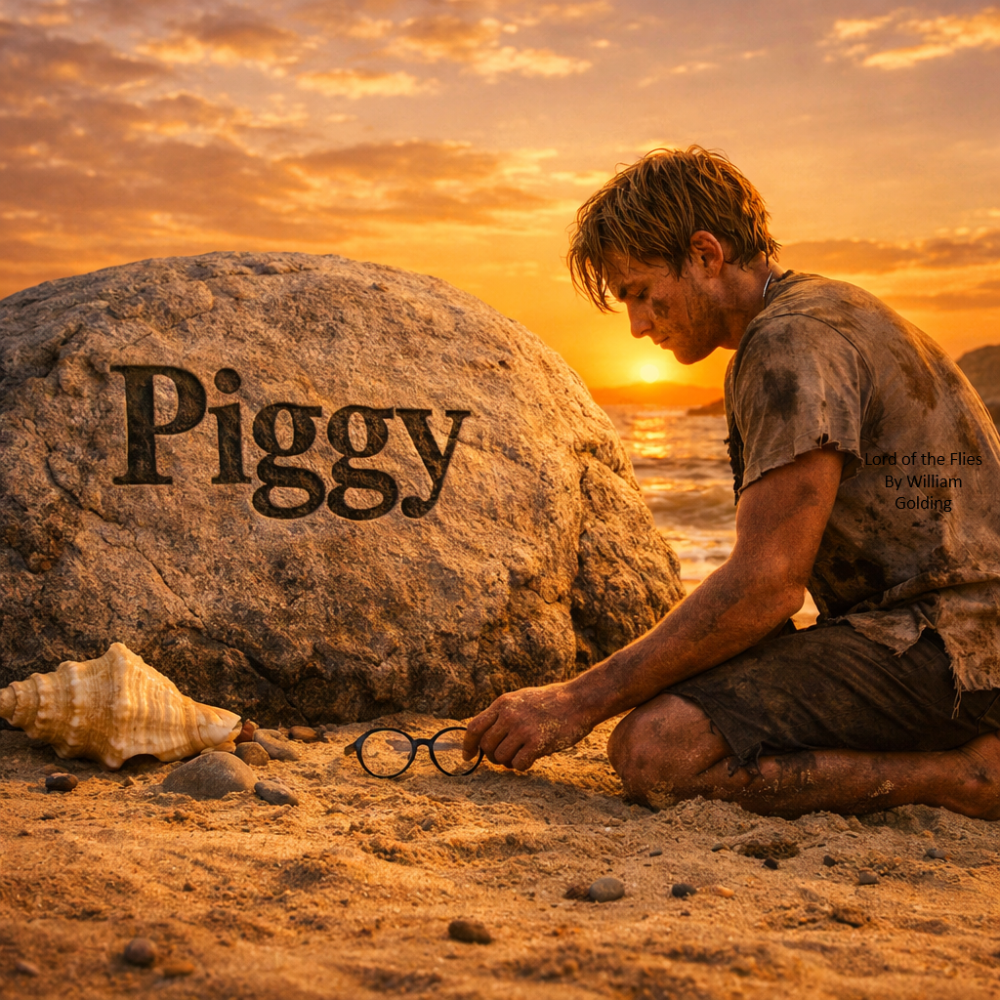

I know I wasn’t the strongest.
I wasn’t the fastest.
But I tried — I really did — to keep things together.
I kept the fire going because someone had to.
I looked after the littluns because they needed it.
And I held onto the conch because it was the only thing that made sense to me —
the only thing that felt like home.
I wanted the others to listen.
Not to me, really —
but to the idea that we could still act like people, not animals.
I hoped for a world where my voice mattered.
Where the rules mattered.
Where we didn’t forget who we were supposed to be.
If you remember me, remember this:
I tried to save what was left of the good in us.
